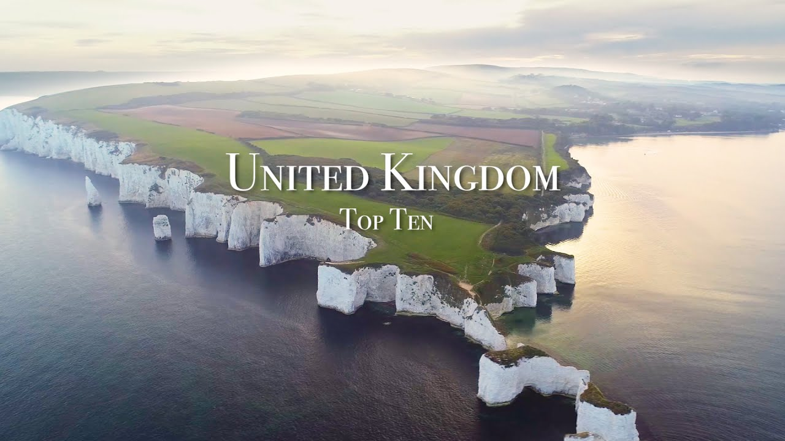

【英国十大必游之地】
Summary: Ryan Shirley shares his top 10 favorite places in the UK, from iconic cities like London to enchanting natural wonders like the Isle of Skye.
摘要： 瑞恩·雪莉分享了他最爱的英国十大景点，从伦敦这样的标志性城市到天空岛这样的自然奇观。

⏱️ Estimated Reading Time: 18 min
What's up guys my name is ryan shirley and i spent the last few years exploring the united kingdom and i want to show you my favorite places so here's my uk top 10.
大家好，我是瑞恩·雪莉，过去几年我一直在探索英国，现在我想和大家分享我最喜欢的地方，以下是我的英国十大景点。
united kingdom is made up of the countries of england wells northern ireland and scotland if you want to go back in time and feel like you're in a fairy tale or a harry potter film the uk is the place for you it's easy to see why so many myths and legends were born here it's one of the world's most enchanting places
英国由英格兰、威尔士、北爱尔兰和苏格兰组成。如果你想穿越时空，感受童话或《哈利·波特》电影般的氛围，英国是你的理想之地。这里孕育了无数神话与传说，是世界上最迷人的地方之一。
all right so for our first location we're gonna go visit possibly the most iconic city in the world london i've traveled more to london than any other international destination i have to say it's my favorite city in the world and i just keep coming back
首先，我们要去世界上最具标志性的城市——伦敦。我去伦敦的次数比任何其他国际目的地都多，它是我最喜欢的城市，我总是忍不住一再回来。
everything from the double decker buses to the energy of piccadilly circus makes the city feel so alive there's just so many places to see
从双层巴士到皮卡迪利广场的活力，这座城市充满生机，有太多值得一看的地方。
you can check out the iconic big ben and walk across the ridge to see the palace of westminster there's the tower bridge which is possibly the most famous bridge in all of london
你可以参观标志性的大本钟，走过桥去看威斯敏斯特宫，还有伦敦最著名的塔桥。
you can go see the stoic guards at buckingham palace or take a ride on the london eye if you haven't already been in london i'd highly recommend visiting when you can it's hard to beat the london atmosphere there's no city like it in the world
你可以去看白金汉宫的卫兵，或者乘坐伦敦眼。如果你还没去过伦敦，我强烈推荐你去一次。伦敦的氛围无与伦比，世界上没有其他城市能与之相比。
all right so after exploring london we're gonna make the two hour drive over to stonehenge located in wiltshire england lies one of the most famous man-made rock structures in the world
探索完伦敦后，我们将驱车两小时前往巨石阵。位于英格兰威尔特郡的巨石阵是世界上最著名的人造石结构之一。
there's a lot of mystery surrounding stonehenge like what was its purpose and how was it made archaeologists believe it was constructed back between 3000 to 2000 bc
巨石阵充满谜团，比如它的用途和建造方式。考古学家认为它建于公元前3000至2000年之间。
stone hedge consists of a ring of rocks each being around 13 feet high and weighing nearly 25 tons each it's unclear what the exact purpose of stonehenge was it's believed that it was used as an astronomical observatory or religious site either way it sure makes you stop and think how people thousands of years ago were able to construct this
巨石阵由一圈石头组成，每块石头高约13英尺，重近25吨。它的确切用途尚不明确，可能是天文观测台或宗教场所。无论如何，它让人不禁思考几千年前的人们是如何建造它的。
alright so after stonehenge we're gonna head on over to the jurassic coast while you won't find any dinosaurs here you might find some fossils on the beach
离开巨石阵后，我们将前往侏罗纪海岸。虽然这里没有恐龙，但你可能会在海滩上发现化石。
the jurassic coast is england's only natural world heritage site and it's become popular with its white cliffs and picturesque beaches that are full of fossils formed over 65 million years ago
侏罗纪海岸是英格兰唯一的自然世界遗产地，以其白色悬崖和风景如画的海滩而闻名，海滩上遍布6500万年前形成的化石。
one of the most famous spots on the jurassic coast is dirty door it's this limestone arch that goes straight into the ocean there's a great beach there and i just can't think of a better place to spend during the hot english summers
侏罗纪海岸最著名的景点之一是杜德尔门，这是一座直通海洋的石灰岩拱门。那里有一片很棒的海滩，我想不出还有比这更好的地方来度过炎热的英国夏天。
one of my favorite spots on the jurassic coast is old harry's rocks now special thanks to my friend david rule for providing this footage he has an awesome instagram and youtube that'll provide in the description below
侏罗纪海岸我最喜欢的地方之一是老哈里岩。特别感谢我的朋友大卫·鲁尔提供这段素材，他有一个很棒的Instagram和YouTube频道，我会在描述中提供链接。
i remember the first time i saw his picture of this place and i was just baffled by the scenery there the old hairy rocks are these sea stacks that are made completely out of chalk that mark the end of the jurassic coast
我记得第一次看到这个地方的照片时，那里的景色让我惊叹不已。老哈里岩是由白垩构成的石柱，标志着侏罗纪海岸的尽头。
in world war ii the stacks were used as target practice for pilots so that's kind of crazy i just love the combination of the green meadows with the white cliffs and the blue ocean i mean it's just hard to beat that scenery
二战期间，这些石柱曾是飞行员的靶场，这有点疯狂。我喜欢绿色草地、白色悬崖和蓝色海洋的组合，这样的景色难以超越。
all right so after the jurassic coast we're ahead up north to visit the country of wells now wells is located in the southwest part of great britain it's famous for its mountainous national parks picturesque coastline and distinct welsh language
离开侏罗纪海岸后，我们将北上前往威尔士。威尔士位于大不列颠的西南部，以其多山的国家公园、风景如画的海岸线和独特的威尔士语而闻名。
one of the most scenic places in wells is the snowdonia national park it's a region in northwest wells that is known for its mountains and lakes the highest peak in wells mount snowdon is located in the park with an elevation of 1085 meters
威尔士风景最美的地方之一是斯诺登尼亚国家公园。这个位于威尔士西北部的地区以其山脉和湖泊而闻名。威尔士最高峰斯诺登山就在这里，海拔1085米。
you can hike on up there or you can take the snowdon mountain railway to the top if you're lucky you might be able to see ireland across the sea
你可以徒步登山，或者乘坐斯诺登山铁路到达山顶。如果运气好，你甚至可以看到海对面的爱尔兰。
alright so after wells were ahead to the island man now located in the irish sea right between england and ireland lies a rugged island known for its rural landscapes and medieval castles
离开威尔士后，我们将前往马恩岛。这座崎岖的岛屿位于英格兰和爱尔兰之间的爱尔兰海上，以其乡村风光和中世纪城堡而闻名。
while it's technically not part of the united kingdom it has status of crown dependency and the uk is responsible for its defense and external relations
虽然严格来说它不是英国的一部分，但它是王室属地，英国负责其国防和对外关系。
the iowa man has had an interesting history humans have lived on it since 6 500 bc and in the 19th century it was ruled by norway but in 1266 the island became part of scotland and now it is a self-governing isle
马恩岛有着有趣的历史。人类自公元前6500年就居住在这里，19世纪曾被挪威统治。1266年，该岛成为苏格兰的一部分，现在它是一个自治岛屿。
a interesting place on the island man is peel castle it was constructed by vikings in the 11th century street and just sits right on the ocean and it's a pretty cool castle if you ask me
马恩岛上有个有趣的地方是皮尔城堡。这座城堡由维京人在11世纪建造，坐落在海边，我觉得它非常酷。
all right so after the isle man we're going to head across the sea to visit northern ireland now ireland is full of just beautiful scenery dramatic coastal cliffs and countless castles
离开马恩岛后，我们将跨海前往北爱尔兰。爱尔兰到处都是美丽的风景、壮丽的海岸悬崖和无数的城堡。
back in 1921 ireland was split into northern and southern ireland as a result of the government of ireland act of 1920. while southern ireland became a free irish state northern ireland remained within the united kingdom
1921年，根据1920年《爱尔兰政府法案》，爱尔兰被分为北爱尔兰和南爱尔兰。南爱尔兰成为自由的爱尔兰国家，而北爱尔兰仍属于英国。
the capital of northern ireland is the city of belfast which is the birthplace of the titanic ship one of the most iconic places in northern ireland is the dark hedges it's this road lined with beach trees planted in the 18th century
北爱尔兰的首都是贝尔法斯特，这里是泰坦尼克号的诞生地。北爱尔兰最具标志性的地方之一是黑暗树篱，这是一条两旁种有18世纪栽植的山毛榉树的路。
it was used as a failing location for the game of thrones on the northern coast you can check out the carrick already rope bridge or see the basalt columns at the giant's causeway and there's just so much history and beauty in ireland it makes me want to go there and explore
这里是《权力的游戏》的取景地。在北海岸，你可以参观卡里克索桥，或者看看巨人堤道的玄武岩柱。爱尔兰有太多的历史和美景，让我想去探索。
alright so for our next location we're gonna head to scotland to visit the isle of skye this is probably my all-time favorite place in the uk you literally feel like you're in a fairy tale when you visit there
接下来，我们将前往苏格兰的天空岛。这可能是我在英国最喜欢的地方，当你到那里时，真的会感觉自己置身于童话中。
i was lucky enough to go to the isle sky last summer and it's about a five hour drive from edinburgh one of the most impressive places in the isle of skye is old man of store it's one of my all-time favorite rock formations
去年夏天我有幸去了天空岛，从爱丁堡开车大约需要五个小时。天空岛最令人印象深刻的地方之一是斯托老人岩，这是我最喜欢的岩石构造之一。
i felt like i was on the set of game of thrones when i was there now to get to the old mata store it's about a four kilometer hike you walk through some conservation gates and you'll reach the famous rock pinnacles
在那里时，我感觉自己像是在《权力的游戏》的片场。要到达斯托老人岩，需要徒步约四公里，穿过一些保护区的门，就能到达那些著名的岩峰。
i went for sunrise and sunset and both occasions were breathtaking when i was there there was just like crows flying around the rock and there was some sheep running around i mean it was just a magical place
我在日出和日落时分去了那里，两次都令人叹为观止。当时有乌鸦在岩石周围飞翔，还有羊群跑来跑去，那真是个神奇的地方。
so the legend of the old mana store is supposedly a giant lived there a long time ago and when he was buried his thumb was left sticking out of the ground when you go there it's easy to see why it's one of the world's most iconic rock formations
传说很久以前有个巨人住在那里，当他被埋葬时，他的拇指露在地面上。当你到那里时，很容易理解为什么它是世界上最著名的岩石构造之一。
it's one of my all-time favorite places and i recommend everyone to see at least once in their life just a few minutes away from the old mana store there is a breathtaking waterfall called me out falls that cascades down at the ocean
这是我最喜欢的地方之一，我推荐每个人都至少去看一次。离斯托老人岩几分钟路程的地方，有一个令人惊叹的瀑布——梅奥瀑布，它直接倾泻入海。
there's a nice viewpoint where you can look at the waterfall the surrounding sea cliffs in the area are also stunning one of the most famous is kilt rock which are right by mio falls
那里有一个很好的观景点可以欣赏瀑布，周围的海崖也非常壮观。最著名的是基尔特岩，就在梅奥瀑布旁边。
i mean it's just such a cool area there aren't many waterfalls that fall straight into the ocean if you're looking to find some fairies you may want to check out the fairy pools
这个地方太酷了，很少有瀑布直接落入海洋。如果你想找一些仙女，可以去看看仙女池。
there are these pige blue pools that lie at the base of the black colons when i was there there were so many midges i didn't dare get close to water so make sure you bring some bug spray if you want to do a beautiful hike i'd also recommend visiting the korang
这些蓝绿色的水池位于黑库林山脚下。我在那里时有很多小飞虫，不敢靠近水边，所以记得带驱虫喷雾。如果你想进行一次美丽的徒步，我还推荐去科朗。
it's one of the most beautiful areas in the isle of skye you feel like you're walking on a giant golf course i found this crazy vantage point you get a good 360 view of the whole area
这是天空岛最美丽的地区之一，感觉像是走在一个巨大的高尔夫球场上。我发现了一个绝佳的观景点，可以360度欣赏整个地区。
all right so after the isle of skye we're going to head over to the nearby eileen donahan castle if you're driving to the isle of skye you will drive right by this it's one of my favorite castles in the uk
离开天空岛后，我们将前往附近的艾琳多南城堡。如果你开车去天空岛，会经过这里。这是我最喜欢的英国城堡之一。
situated on a small tidal island at the point where the three great sea locks meet the castle was built in the 13th century i'm so mad at myself i didn't visit the castle when i was there i wasn't able to check it out that's one of my biggest regrets of when i visit the uk
城堡坐落在一个潮汐小岛上，位于三大海湖的交汇处，建于13世纪。我很生气自己当时没去参观，这是我英国之行最大的遗憾之一。
so don't make the same mistake i made all right so after castle warren head over to one of scotland's most iconic locations the glen finan vieta is located at the top of loch shill in the west highlands of scotland
所以别犯和我一样的错误。离开城堡后，我们将前往苏格兰最具标志性的地点之一——格伦芬南高架桥。它位于苏格兰西部高地的希尔湖顶端。
it was completed around 1898 this may look familiar because it was featured in the harry potter films when i was there i wanted to get close to the bridge so i walked underneath it
它大约建于1898年，可能看起来很眼熟，因为它在《哈利·波特》电影中出现过。我在那里时想靠近桥，所以走到了桥下。
i was just shook by how big it actually was after i hiked to the top to get a good vantage point so i could see the famous train go across the via duck just really remind you of those harry potter movies
它的实际大小让我震惊。后来我徒步到顶部，找到一个好的观景点，看到了著名的火车驶过高架桥，这真的会让你想起《哈利·波特》电影。
all right so after glen finan we're gonna head over to edinburgh now if you want to go back in time edinburgh is a must it's where jk rowling wrote her harry potter novels
离开格伦芬南后，我们将前往爱丁堡。如果你想穿越时空，爱丁堡是必去之地。这里是J.K.罗琳写《哈利·波特》小说的地方。
when i started traveling this was one of the first cities i visited it's a medieval old town with intricate neoclassical buildings cobblestone streets and beautiful gardens
我开始旅行时，这是第一批造访的城市之一。这是一个中世纪的古城，有着精致的新古典主义建筑、鹅卵石街道和美丽的花园。
the iconic edinburgh castle overlooks the city and is home to scotland's crown jewels when i was there i didn't go into the castle because i was being too cheap but one of my favorite places was calton hill
标志性的爱丁堡城堡俯瞰着城市，是苏格兰王冠珠宝的所在地。我在那里时因为太吝啬没进城堡，但我最喜欢的地方之一是卡尔顿山。
it offers a beautiful view of the whole entire city while we're still in edinburgh we're going to head over to arthur's seat now arthur's seat is located in holy rod park and it's a short walk from edinburgh center
那里可以欣赏到整个城市的美丽景色。我们还在爱丁堡时，将前往亚瑟王座。亚瑟王座位于荷里路德公园，距离爱丁堡市中心只有很短的步行距离。
arthur's seat is an extinct volcano with an elevation of 823 feet when i was there i wanted to get as high as i could so i could see all of edinburgh i made a hike up and i reached the top it was just so windy when i was there nearly blew me over
亚瑟王座是一座死火山，海拔823英尺。我在那里时想尽可能登高，以便看到整个爱丁堡。我徒步登顶，当时风很大，差点把我吹倒。
after i hiked to the top i had a good time just hiking around holy red park and enjoying the views of one of uk's most iconic cities
登顶后，我在荷里路德公园徒步，欣赏英国最具标志性城市之一的景色，度过了愉快的时光。
all right well that is it for my united kingdom top 10. the uk is just such a unique region in the world and i hope all can witness its beauty in history what was your favorite place in the video let me know in the comments below
好了，这就是我的英国十大景点。英国是世界上如此独特的地区，我希望大家都能见证它的美丽和历史。你最喜欢的景点是哪个？在评论区告诉我吧。
you guys want to support the channel considering becoming a patron and where you get perks such as free travel guides and stock footage you can find me on instagram shirley.films it's ryan and we will see you later
如果你想支持这个频道，可以考虑成为赞助人，获得免费旅行指南和素材等福利。你可以在Instagram上找到我